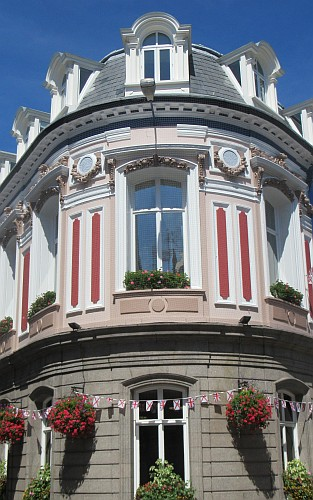

Des vacances en Ville
Moussieu l'Editeu,
La Merrienne mint la gâzette bas. "Eh bein, Ph'lip," ou dit, "chu pouôre Connêtablye d'la Ville est mort à la fîn. Nous avait dit tch'il avait ocquo une chance de se r'faithe, mais nouffé. Par chein qu'j'ai tréjous ouï, ch'tait un bouon homme, tch'y f'thait san d'vé, sans exception de pèrsonne, comme y disent en cour, et tch'y n'avait pas d'en'mins."

"Vèthe," j'l'y dit, "mais malheutheusement y d'vint un mio têtu en vieillissant, et sûs la fîn y n'êcoutait pèrsonne. Enfîn, il est hors, et je n'doute pas que Saint-Piêrre y'a ouvri la porte. Ach'teu y faut un rempliéchant, et par chein qu'nou m'a dit, y'étha pûs qu'un candidat, car y pathait qu' y'a bétôt une demié-doûzaine de mêssieux tch'y voudraient présidé à l'Hôtel de Ville."
"Ch'est drôle assez," ou s'fit, "car de nos jours nou n'trouve pas hardi d'gens tch'y veulent chais djobbes-là. Si par exemplye, notre Connêtablye se méttait dans la tête d'abandonné, ouèsque nous ithai chérchi pour un rempliéchant?"
"Y s'trouv'thait, merrienne," j'l'y dit, "mais n'y'a pas d'tchéstchon d'chonna agniet. J'avons un bouon Connêtablye, et y réstetha ouèsqu'il est aussi longtemps comme y voudra. Mais en Ville, y'en a hardi tch'y disent tch'il est grand temps qu'y'aie un change, car l's'affaithes ne vont pas à lûs goût. L'homme tch'y lûs faut, y maintcheinnent, ch'est yun comme Johnny Piné, tch'y n'est pûs. Ch'tait un p'tit homme, mais y n'avait peux d'pérsonne, et à l'Hôtel de Ville y faisait à sa tête, et n'se gênait d'rain. Les Villais, ach'teu, ou au mains la grande mâjorité d'mandent un homme de la même trempe."
"Et s'en vont-y l'trouvé ch't'homme-là?" ou d'mandit.
"Par chein qu'j'entends, oui," j'l'y dit, "mais sans autchune doute y'étha une bataille. J'pouôrrai p't'être t'en dithe pûs long la s'maine tchi veint. Ach'teu, y'a une vacance étout en Ville pour Chantgni. Le sien tch'y veint d'mouothi 'tait bein populaithe, et sans doute éthait tait êlu Connêtablye s'il avait tait en santé. Chein que j'trouve drôle, ch'est qu'tandis qu'tout est trantchillye dans la Campagne, y'a deux importants postes à remplyie en Ville."
"Et pour la djobbe de Chantgni, y'a-t'y un candidat?" ou d'mandit.
"Si nou peut craithe la gâzette," j'l'y dit, "y'en a dêjà deux, et y pouorrait s'en trouvé d'autres."
"Et pourtant," ou s'fit, "y'a longtemps qu'nous avait ouï qu'en Ville pérsonne ne voulait la djobbe."
"Pas vrai, Merrienne," j'l'y dit. "Y'a tréjous d's'hommes tch'y veulent la djobbe, mais quand nous se r'souveint des grands Chantgniers du temps passé, y faut adméttre qu'au jour d'agniet, y'a yeu un grand changement. Le fait est que l's'hommes tch'y dév'thaient prendre ne veulent pas être embêtés d'la djobbe, et chein tch'en résulte nou peut vais pour sé-même. Et si chonna continue, je n'sais vraiement pas tchèsque en s'sa la fîn. Heutheusement, dans les pâraisses, y'a ocquo d's'hommes de bouonne famillye tch'y sont prêts à faithe lûs d'vé, et d'sérvi lûs pâraisses comme lûs anchêtres avaient fait dans lûs temps. Le vrai Jêrriais n'ditha pas nânin quand il est tchéstchion d'remplyi un poste, autrement, ma fille, nous éthait bein vite à dithe à-bétôt à notre p'tit Jêrri s'sait absolûment trébutchi."
"Y'en a hardi, pourtant, tch'y voudraient l'vais dispathaître," ou dit. "Chais lettres-là dans la Post le prouvent."
"Chais lettres-là n'prouvent rain, ma vieille," j'l'y dit, "sinon qu'j'avons parmi nous un tâs d'Angliais tch'y s'saient mûs siez-yeux. Y sont bein contents d'vivre ichîn à bouon marchi, mais y trouvent tréjous à-r'dithe. Tchi dommage que nou n'peut pas les méttre à bord d'un baté tchique bieau matin et d'lûs dithe de prendre bouon soin de ne r'venin pas."
"Damme vethe!" s'fit la bouonnefemme.
Ph'lip
7/1/1956
Viyiz étout: